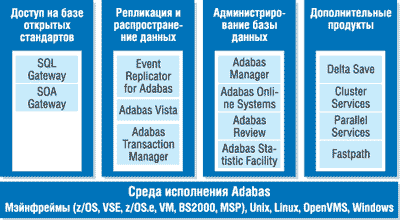
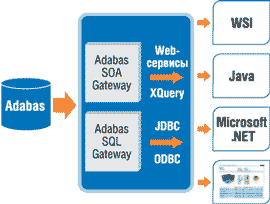
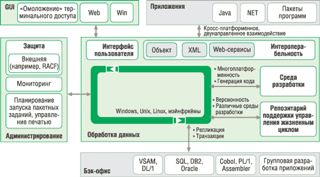
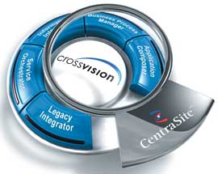

Немецкая компания Software AG (http://www.softwareag.com/ru) уже более 35 лет создает высокопроизводительные базы данных, инструментальные средства разработки приложений и технологии интеграции. Software AG - один из крупнейших в мире производителей ПО: по итогам 2005 г. доход компании составил 438 млн евро, на 6,5% больше, чем годом раньше. Более 3000 клиентов компании по всему миру используют ее решения для поддержки критически важных для бизнеса систем. Software AG имеет представительства примерно в 70 странах мира, а число ее сотрудников превышает 2700 человек. О перспективах развития ее бизнеса говорит и тот факт, что стоимость акций Software AG на франкфуртской фондовой бирже TecDAX за последние полтора года выросла более чем вдвое.
Компания имеет сильные позиции и на российском рынке. По данным аналитических исследований, Software AG занимает здесь четвертое место в сегменте СУБД (5,4%) - после Oracle (69,9%), Microsoft (8,5%) и IBM (7,2%). Она поставляет продукты и технологии и помогает вести проекты в ряде организаций, в числе которых УИС Спецсвязи ФСО РФ, МО и МВД РФ, ОАО "Газпром", ФГУП "Рособоронэкспорт", ОАО "РЖД", Агентство новостей "Интерфакс". Основные продукты Software AG сертифицированы для применения в органах государственной власти России. За последние годы компания усилила свои позиции в промышленном секторе, где в числе ее заказчиков можно назвать такие предприятия, как "Заволжский моторный завод", ГАЗ, "Химпром", "Волжский трубный завод", "Казанский вертолетный завод", "Тульский оружейный завод", "Амурский судостроительный завод", "Промтрактор", "Уральская кузница", "Красноярский машиностроительный завод".
Тем не менее у многих ИТ-специалистов в России представления о продуктах Software AG связаны с воспоминаниями 80-х гг., на которые пришелся пик популярности ее ключевых продуктов - СУБД Adabas и среды разработки Natural. Одна из причин тому - недостаточная активность маркетинговой политики, что не лучшим образом повлияло на узнаваемость торговой марки Software AG.
Однако ситуация меняется: после прихода в 2005 г. к руководству Software AG исполнительного директора Карла-Хайнца Штрайбиха компания стремится больше внимания уделять продвижению своего ПО на рынке, становясь в глазах сообщества разработчиков более открытой для пользователей и более восприимчивой к их запросам. Это касается и нашей страны. В последних числах марта Software AG совместно с корпорацией IBM провела для российских заказчиков и партнеров конференцию "Сервисно-ориентированная архитектура решений Software AG на базе IBM System z". На этом мероприятии речь шла о том, как компания представляет себе возможности совершенствования корпоративной ИТ-инфраструктуры в контексте самых современных тенденций и о новом поколении ПО Software AG. Там же были объявлены и планы создания дочернего предприятия - российского ООО "САГ Системз РУС", основными задачами которого станут повышение качества обслуживания заказчиков, расширение присутствия в регионах РФ, активное развитие бизнеса на территории СНГ и интенсификация работы с партнерами.
Однако здесь важно отметить, что год 2005-й ознаменовался в жизни Software AG и началом нового технологического курса на создание комплексной программной платформы на базе современной концепции сервисно-ориентированной архитектуры (SOA). В свое время компания сделала себе имя благодаря СУБД Adabas, а впоследствии - и среде разработки и эксплуатации приложений Natural. Основываясь на этом базисе, Software AG сосредоточилась на создании систем обработки транзакций для предприятий и продолжает эту работу, несмотря на то, что фокус ее деятельности перенесен в область средств разработки сервис-ориентированных приложений, модернизации информационных систем и интеграции, управляемой бизнес-процессами.
Software AG всегда традиционно ориентировалась на мощные мэйнфреймы, и, приступая к реализации SOA-платформы, она делает акцент не только на достаточно широком применении этих вычислительных систем в среде корпоративных заказчиков и наличие у последних множества унаследованных приложений, но и на том, что современные технологии Web-сервисов дают новый мощный импульс для централизации вычислительных ресурсов на основе "больших" компьютеров. В качестве третьего важного момента отметим ставку на стратегическое сотрудничество с другими ведущими ИТ-поставщиками, среди которых нужно выделить IBM и Fujitsu (два ведущих производителя мэйнфреймов и ПО для них).
Adabas 2006
Высокая надежность и производительность Adabas в сочетании с низкими эксплуатационными затратами дает этой СУБД преимущества при создании бизнес-приложений масштаба предприятия. Adabas поддерживает высокую скорость обработки транзакций (например, свыше 150 тыс. транзакций в секунду), в то же время гарантируя целостность данных и предоставляя гибкие средства управления ими. Система способна обеспечивать одновременный доступ тысяч пользователей, при этом время ответа не превышает 1 с. Adabas требует значительно меньше административных ресурсов, чем сравнимые с ней или даже менее масштабные системы управления реляционными базами данных.
Стратегия Software AG в отношении Adabas нацелена на поддержание ее соответствия современным требованиям и обеспечение новых возможностей для пользователей. Учитывая характеристики производительности Adabas, этого более чем достаточно, чтобы система по-прежнему устраивала своих пользователей. СУБД Adabas текущих версий работает на платформах мэйнфреймов (z/OS и иных), а также в среде Z/Linux, Linux, Unix и Windows. На мэйнфреймах поддерживается версия Adabas 7.4 и выше, а на открытых системах - версия Adabas 5.1 и выше.
|
"При тех средствах, которые сейчас и в будущем будет поставлять Software AG, мы не видим для пользователей Аdabas никаких технических причин даже задумываться о переходе на другую платформу. А вот дополнительное инвестирование в имеющуюся СУБД Adabas, наоборот, принесет ощутимые прибыли ее пользователям. Ведь акцент Software AG на том, чтобы сделать Adabas открытой для любой среды при помощи XQuery, Web-сервисов и SQL, вместе с возможностью реплицировать данные из Adabas в любую среду в режиме реального времени, наделяет Adabas способностями, сравнимыми с другими современными базами данных (если не превосходящими их)". Филип Хоуард (Philip Howard), Bloor Research, 2005 |
В этом году Software AG объявила о запуске продуктовой линии Adabas 2006, которая позволяет задействовать масштабируемую архитектуру базы данных для поддержки данных любого типа и объема. В состав этой системы входит семейство инструментальных средств, поддерживающих совместное использование данных и обеспечивающих интероперабельность с любым другим приложением, СУБД или ПО промежуточного уровня. Благодаря Adabas 2006 администраторы могут использовать единый Web-интерфейс для работы со всей средой управления данными, поставляемой компанией Software AG.
Ключевой компонент Adabas 2006 - новая версия популярной СУБД, которая пополнится расширенными средствами виртуального хранения данных и улучшенной поддержкой работы в реальном времени с реляционными и XML БД (рис. 1). Открытые программные интерфейсы будут использовать Web-сервисы, JDBC и ODBC, стандартные запросы смогут выполняться с помощью языков SQL и XQuery. Наряду с высокой производительностью транзакций эта СУБД сможет в единой среде оперировать с большими мультимедиа-файлами совместно со структурированными данными.
|  | Рис. 1. Основные компоненты Adabas 2006 и их состав.
|
Доступ к БД организован с помощью шлюзов - Adabas SQL Gateway и Adabas SOA Gateway (рис. 2). Adabas SOA Gateway, выпущенный в начале февраля, стал первым элементом новой продуктовой линии Adabas 2006. Через него разработчики программных решений смогут обращаться к данным Adabas с помощью Web-сервисов из различных сред, в том числе Java/Eclipse, .NET и AJAX. Шлюз устанавливается на том же сервере, что и Adabas, и не требует дополнительных компонентов на клиентской стороне. Сам Adabas SOA Gateway поддерживает открытую среду разработки Eclipse и может обеспечивать доступ к данным или логике Adabas в виде Web-сервисов.
|  | Рис. 2. Adabas общается с внешними системами через шлюзы.
|
Natural 2006
Главное свойство Natural как среды разработки 4-го поколения состоит в том, что сложность системы и данных скрыта от разработчика (рис. 3). Этот факт обеспечивает два основных преимущества. Во-первых, разработчик может заниматься толкованием бизнес-правил, не беспокоясь о реализации вспомогательных задач, необходимых для работы программы, что дает существенное преимущество при разработке новой программы. Во-вторых, приложения, разработанные с помощью Natural, гораздо проще сопровождать и обновлять, и это связано не только с генерируемой документацией, но и со встроенными в продукт средствами автоматизированной обработки стандартных ситуаций. Это особенно важно при обновлении приложений на платформах мэйнфреймов.
|  | Рис. 3. Открытая архитектура Natural.
|
Существует две различные версии системы - Natural 4.2 для мэйнфреймов и Natural 6.2 для открытых систем; первая отличается тем, что написана на языке Assembler, хотя обе они обеспечивают совместимость программ на уровне исходного кода. Тем не менее в обоих случаях разработка приложений ведется в среде Windows, и затем приложение развертывается на выбранной платформе. Исторически ПО Natural было тесно связано с СУБД Adabas, однако сейчас система способна работать с широким спектром СУБД: от DB2, Oracle и MySQL до IMS/DB и VSAM. Стоит отметить, что в Natural предусмотрены мощные средства для работы с XML.
В 2005 г. была выпущена новая версия Natural Engineer - это инструментарий рефакторинга, который может применяться для реструктуризации кода, улучшения его читаемости, документирования программ, интернационализации и т. п. Позиция Software AG состоит в том, что на пути к внедрению SOA компании должны пройти процесс рефакторинга.
Для поддержки разработки сервис-ориентированных приложений Software AG разработала комплект сервисов и средств, которые составляют часть среды Natural. Новые его возможности обеспечат большую степень автоматизации, позволяя определять Web-сервисы, основанные на подпрограммах, и генерировать совершенно новые Web-сервисы. Комплект средств, основанный на среде разработки Natural Development Studio и генераторе программного кода, называется Natural Business Services (первый продукт линии Natural 2006, выпущенный на рынок в этом году). Он предоставляет разработчикам, использующим Java и .NET, возможность вызывать ориентированные на транзакции сервисы, специально предназначенные для работы на мэйнфрейме, например, финансовые приложения, требующие очень большой скорости выполнения. Тем самым Natural Business Services способствует более тесному и оперативному взаимодействию между разработчиками, создающими приложения для мэйнфреймов и для серверов открытых систем.
Software AG планирует во второй половине 2006 г. расширить ассортимент доступного разработчикам инструментария, реализовав Natural Productivity Pack (среду разработки) в Eclipse, стратегической для компании платформе разработки приложений. Подключаемые модули для Eclipse уже выпущены для продуктов ApplinX и EntireX. Другие средства разработки от Software AG, такие, как Natural Business Services, также будут доступны в Eclipse и будут обеспечивать общий пользовательский интерфейс для всего портфеля продуктов Software AG.
Необходимо отметить тесную взаимосвязь продуктов компании. Например, с помощью CentraSite - ядра пакета решений crossvision на основе SOA, который интегрирован с репозитарием Natural Business Services, обеспечивается стандартный доступ к Web-сервисам (посредством UDDI, WebDAV, XQuery и т. п.). Это означает, что сервисы, разработанные с помощью Natural, могут публиковаться в открытом хранилище SОА, поддерживающем UDDI.
Технологии интеграции
История разработки и внедрения интеграционных решений в Software AG насчитывает более двух десятилетий. Одним из самых известных продуктов компании в классе интеграционных решений можно по праву назвать EntireX, который представляет собой общую шину или информационную магистраль для программных компонентов. Любое приложение, подключенное к EntireX, может легко и эффективно связываться с другим подключенным к ней приложением. Широкий набор поставляемых интерфейсов и средств разработки позволяет приложениям на разных языках (Cobol, Natural, C/C++, Visual Basic, Java и т. д.) подключаться к магистрали EntireX.
Базовые технологии EntireX - это брокер сообщений и средства поддержки компонентной модели разработки программ. Последние включают как поддержку DCOM, так и открытые стандарты CORBA и SOAP. EntireX обеспечивает реализацию DCOM в разных средах, в том числе Linux, Unix и на платформах мэйнфреймов. С помощью этого продукта на более чем 1000 предприятий по всему миру успешно выполнены проекты интеграции Web-приложений, "коробочных" систем, систем собственной разработки и унаследованных технологий.
Функциональность EntireX была использована в одном из продуктов пакета решений crossvision, о запуске которого компания объявила в конце февраля этого года.
Пакет crossvision стал ответом компании на растущие запросы рынка, связанные с поддержкой сервис-ориентированной архитектуры и открытых стандартов. Выпуск новых продуктов - это не резкая смена курса и отказ от существующих и доказавших свою эффективность решений, а результат развития продуктового портфеля и стратегии компании, сфокусированной на предоставлении продуктов и услуг, необходимых заказчикам для повышения отдачи от ИТ-инфраструктуры.
ПО crossvision объединяет шесть многофункциональных компонентов, которые поддерживают различные уровни SOA и реализуют требуемую функциональность, в зависимости от стоящих перед заказчиком задач (рис. 4). Поскольку crossvision создан на основе открытых стандартов, он поддерживает как новые, так и унаследованные системы, позволяя одинаково эффективно применять все имеющиеся в компании наработки (см. таблицу).
|  | Рис. 4. Пакет crossvision объединяет шесть многофункциональных компонентов в единую SOA-платформу.
|
Вместо того чтобы адаптировать бизнес-процессы организации к предопределенной платформе ИТ, crossvision настраивается под требования заказчика, гибко интегрируя бизнес-процессы в масштабе всей организации и предоставляя функции контроля, необходимые для достижения целей и развития бизнеса.
Состав SOA-платформы crossvision
| Продукт | Основные функции |
| crossvision Application Composer - быстрое формирование новых бизнес-приложений на основе существующих систем | Визуальное создание новых бизнес-решений, не требующее специальных навыков
программирования Формирование интерактивных многофункциональных Интернет-приложений (Rich Internet Application) на основе существующих сервисов и компонентов Быстрое и простое проектирование и внедрение приложений |
| crossvision Business Process Manager - координация бизнес-процессов в масштабе всей организации | Определение, реализация и оптимизация бизнес-процессов Оценка результатов Увеличение производительности за счет более высокой гибкости$Увеличение уровня использования ресурсов и усиление контроля над выполнением бизнес-процессов |
| crossvision Service Orchestrator - создание новых бизнес-сервисов на основе существующих технических сервисов | Создание бизнес-сервисов на основе открытых стандартов Преобразование существующих сервисов и сообщений с помощью композиции и "оркестровки Эффективное использование механизмов предоставления сервисов и их защиты |
| crossvision Information Integrator - объединение данных из разных систем в единое, дружественное к пользователю представление | Эффективное управление информацией Моделирование бизнес-представлений из гетерогенных источников данных на основе семантического подхода Публикация информационных моделей в виде Web-сервисов |
| crossvision Legacy Integrator - интеграция имеющихся приложений и создание новой функциональности | Эффективное использование возможностей имеющихся систем в виде новых,
опирающихся на стандарты сервисов Возможность не отказываться от унаследованных систем и не заменять их Инкапсуляция функциональности, продление полезной жизни и максимально эффективное использование сложившейся в компании информационной инфраструктуры |
| CentraSite - управление средой SOA и ее регулирование ради максимальной открытости и прозрачности | Управление всем жизненным циклом SOA на основе открытых стандартов Рост рентабельности за счет увеличения прозрачности, улучшения условий совместной работы, эффективного использования сервисов, управления поэтапными изменениями и оптимальной координации Преимущества от использования открытого репозитария, который имеет возможность горячего подключения, интеграции всех инструментальных средств SOA и поддержки их взаимодействия |
CentraSite - совместная разработка Fujitsu и Software AG, которые разделяют общее представление о процессно-ориентированной интеграции, и это представление как раз и реализовано в данном продукте. CentraSite предоставляет возможности управления и регулирования SOA, необходимые любому современному предприятию, дает полный контроль над слабо связанными сервисами. Таким образом, CentraSite формирует критически важную магистраль и основу пакета crossvision. Репозитарий создан на основе открытой архитектуры и полностью поддерживает UDDI Version 3, WebDAV, XQuery и другие соответствующие стандарты.
Компания Software AG, будучи привержена открытости и идее взаимодействия, развивает в этом направлении все свои продукты и считает, что открытые стандарты - это залог будущего. Пакет crossvision (также созданный на основе открытых стандартов) позволяет клиентам поддерживать согласованность с системами их партнеров по бизнесу и проектами, реализуемыми в отрасли, а также гарантирует совместимость с инновационными решениями, которые могут быть созданы в будущем. Культура открытой разработки гарантирует, что инфраструктура компании сможет адаптироваться к меняющимся требованиям рынка, что дает свободу выбора в плане интеграции продуктов партнеров или других сторонних компаний.
Внедрять crossvision можно помодульно - такой подход значительно снижает риски, затраты и время простоя. Кроме того, компания предлагает гибкую модель лицензирования, которая позволяет выбирать из всего пакета компоненты, отвечающие потребностям заказчика. Этот пример лишний раз показывает, как Software AG меняет путь развития программных решений, в то же время сохраняя их полезность как на техническом уровне, так и на уровне инвестиций.